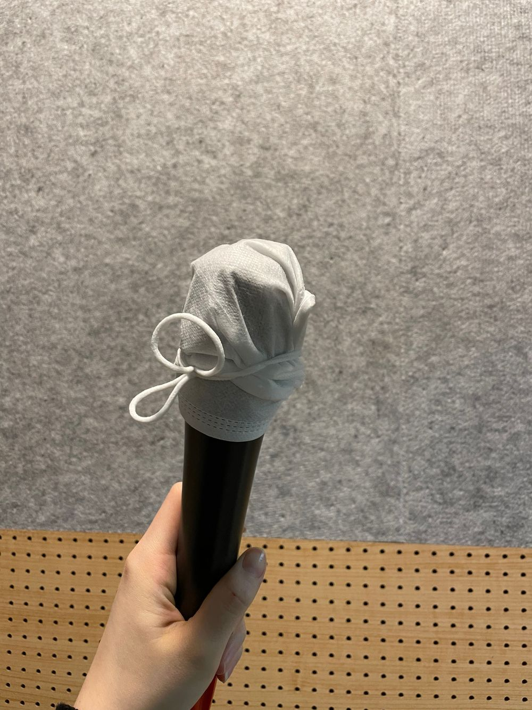

요즘 보컬연습을 하고 있는데
선곡을 잘한건지 모르겠네요🥲
어렵드아..
그런데 노래가 너무 좋아서 지금 한 80번? 까지 들었으려나
뭐.. 적당히... 65번?이라고 합시다 핳 .. 그 정도
연습하면서 들어왔는데
그럼에도 불구하고 계속 듣고 싶은 노래예요
살짝 어렵다고 느끼는 건 나름 저에겐 또 도전이고 과제니까
잘 선곡 한거겠죠?
저도 부담 안가지고 부를 날이 왔으면 좋겠어요 ㅎㅎ
급 화남))
이그 부담 덩어리 월말평가ㅡ.,ㅡ
급 응원))
전 엔터테인먼트의 연습생 분들 응원합니다..🙏🏻
저도 월말평가 항상 망했다는 거..
급 애원))
실전파도 있어요... 신인개발팀 선생님들ㅠㅠㅠ
네 ..
그리고 저만의 색으로
담백하게? 여러 노랠 소화할 수 있게 된다면
더할 나위 없겠네요🌼
시국이 또 시국이니 만큼 저는 요즘
마스크를 두 개를 챙깁니다.
하나는 쓰고
하나는요
